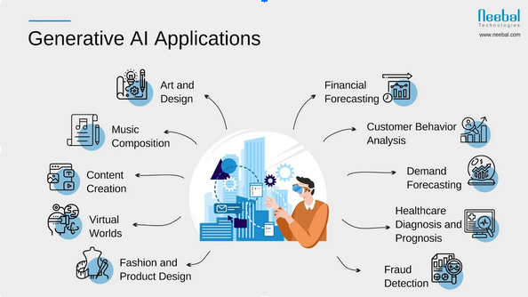

Generative Ai

Generative AI is a type of artificial intelligence that can create new content, such as images, text, music, or even videos, based on the data it has been trained on. It works by learning patterns from large datasets and using them to generate something unique. For example, it can be used to create digital art, write stories or poems, compose music, and even assist in designing products.

One of the biggest advantages of Generative AI is its ability to save time and effort in creating high-quality content. For instance, artists and designers can use AI tools to generate ideas quickly. Another benefit is its potential to solve problems creatively, like helping businesses with marketing designs or improving accessibility through AI-generated subtitles. However, Generative AI also faces challenges, such as the risk of producing biased or inaccurate information, as it depends on the quality of the data it learns from.